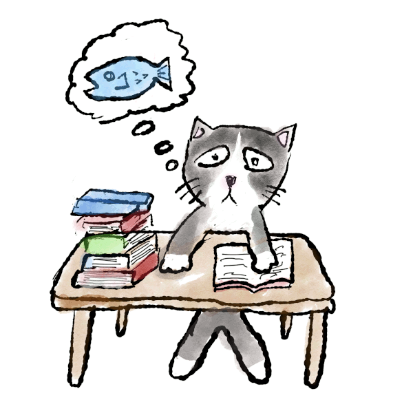

資料
今までに作成したものを公開しています。
研究関係
日本心理学会 執筆・投稿の手びき2022年版対応CSL
「日本心理学会 執筆・投稿の手びき 2022年版」に対応したCSLファイルです。CSLを多言語対応させるために無理をした都合でかなり特殊な環境でしか正しく動きません。
教育関係
様々な確率分布の図
統計関係のことを教えるときに，その都度確率分布の図を作るのが面倒になって，様々なバリエーションのものをまとめて作ったものを置いてあります
今までに作成したものを公開しています。
「日本心理学会 執筆・投稿の手びき 2022年版」に対応したCSLファイルです。CSLを多言語対応させるために無理をした都合でかなり特殊な環境でしか正しく動きません。
統計関係のことを教えるときに，その都度確率分布の図を作るのが面倒になって，様々なバリエーションのものをまとめて作ったものを置いてあります